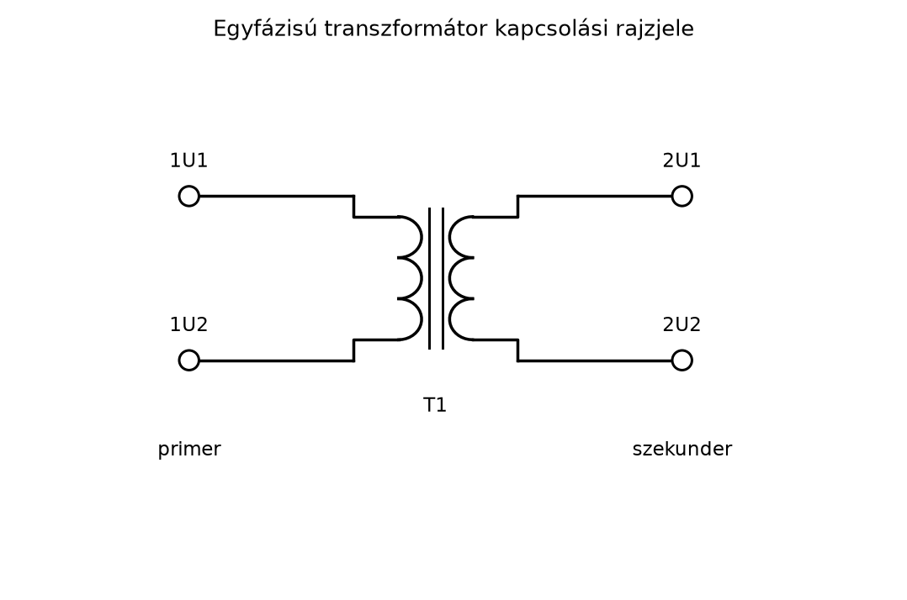
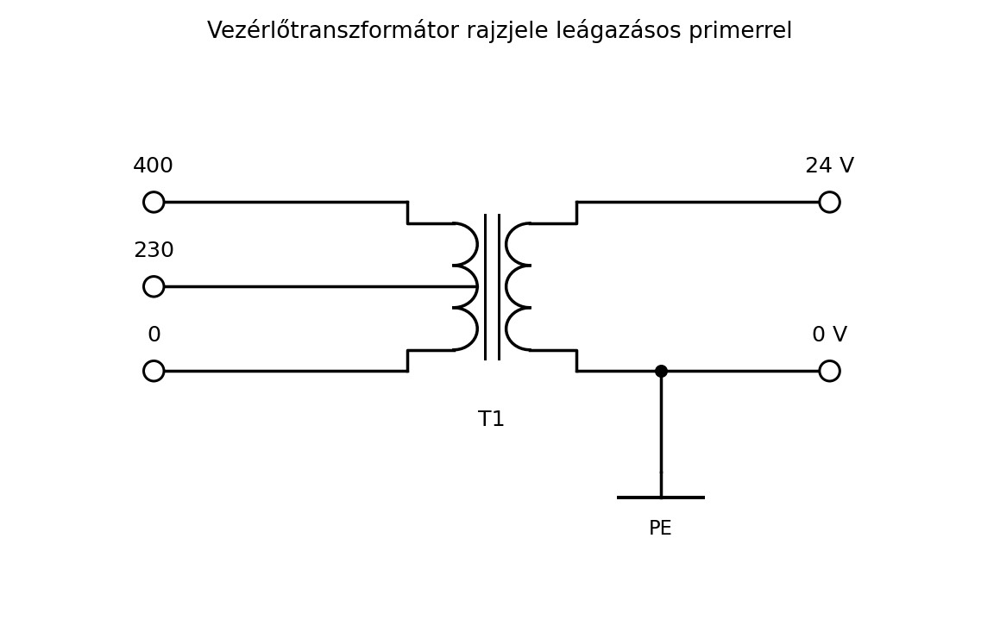

Amikor a műhelyben egy háromfázisú motor bekötésére készülsz, a gépen két „nyelv” beszél hozzád: a tervrajz rajzjele és a gép kapocstáblájának felirata. Ha ezeket félreolvasod, a motor rossz irányba foroghat, túlmelegedhet, vagy azonnal zárlatot okozhat. Ugyanez igaz a transzformátorokra is: a rajzon lévő kapcsolási jelölésből kell kiderülnie, hogyan van kialakítva a primer és a szekunder oldal, és mekkora fáziseltolódás van köztük. Ebben az alfejezetben a motorok és transzformátorok rajzjeleit, kapocsjelöléseit és a kapocstábla híd-kiosztását tanuljuk meg úgy, hogy a rajz, a valós gép és a mérés ugyanazt a képet adja.
Képzelj el egy aszinkron motort, amelynek kapocstábláján hat csavaros kapocs van. A kapcsok mellett az alábbi jelölés látható:
A kapocstáblán lévő hidak határozzák meg, hogy a három fázistekercs csillagba vagy deltába van-e kapcsolva. A motort névleges feszültségén kell járatni, ezért a helyes híd kiválasztása nem „erősebb vagy gyengébb” beállítás, hanem biztonsági kérdés. Ugyanez a logika jelenik meg a rajzokon: a motor, a transzformátor és a kapcsok eggyé válnak a kapcsolási rajzon.
A motorokat általában nem bontjuk ki tekercsenként a kapcsolási rajzon, hanem egyszerűsített jelképet használunk. A háromfázisú motor rajzjele kör, benne M és alatta 3~, az egyfázisúé M 1~, az egyenáramúé M és egyenáram-jel (ellenőrizendő: MSZ EN 60617). Az egyenáramú motor jelölésében gyakran a forgórészt és a gerjesztést is elkülönített rajzjelen látod (ellenőrizendő: az aktuális MSZ EN 60617 jelképkészlet).
A kapcsolási rajzon a motornál feltüntetett U1, V1, W1, U2, V2, W2 jelölések a tekercskezdeteket és tekercsvégeket jelentik. A kapocstáblán ugyanezeket a betűjeleket találod. Ez a U1–V1–W1 jelölés a mai harmonizált jelölés szerint a három fázistekercs kezdetét, a U2–V2–W2 pedig a három fázistekercs végét jelöli. A tekercskezdet és tekercsvég nem önkényes: azonos híd-kiosztásnál biztosítja, hogy a három tekercs mágneses tere 120°-os fáziseltolással összegződjön.
Régi terveken és gépeken a tekercskezdet U, V, W, a tekercsvég X, Y, Z (az U–X, V–Y, W–Z párok); egyes régi hazai gépeken más betűk is előfordulhatnak (ellenőrizendő: régi MSZ-jelölés). A régi jelölést mindig csak úgy kezeld, mint egy „régi terven ezt láthatod” jelzést; a tekercspárokat ilyenkor is mérd ki, mert a régi kapocstáblák kiosztása gyártónként és korszakonként eltérhet (ellenőrizendő: régi MSZ-jelölés aktuális megfeleltetése).
A motorok rajzjelénél a fázisbekötés iránya is lényeges: a kapcsolási rajzon a L1, L2, L3 hálózati fázisok sorrendje adja meg a forgó mágneses mező irányát. Ha a kapocstáblán a hálózati fázisokat felcseréled, a háromfázisú motor forgásiránya megfordul.
A fenti ábra elvi kapcsolást mutat: a hálózati fázisok a tekercskezdetekre, a tekercsvégek pedig közös csillagpontba csatlakoznak. A kapocstábla fizikai elrendezése ezektől eltérhet, de a kapocsjelölés és a hidak logikája ugyanez.
A kapocstáblán a három tekercspár hat kapoccsal jelenik meg: U1–U2, V1–V2, W1–W2. Az, hogy ezekből csillag vagy delta legyen, kizárólag a hidak elhelyezésén múlik.
Csillagkapcsolásban a három tekercsvéget (U2, V2, W2) egy közös pontba kötjük össze. A három fázist a tekercskezdetekre (U1, V1, W1) csatlakoztatjuk. A kapocstáblán ez általában egyetlen, három csavarkapcsot összekötő sínnel vagy két-három rövid híddal valósul meg.
Deltakapcsolásban a három tekercs zárt háromszöget alkot. A hídkapcsolat:
Ezt a három hidat kell elhelyezni a kapocstáblán. A hálózati fázisok továbbra is a U1, V1, W1 kapcsokra jönnek, de a delta hidak miatt minden tekercsre a teljes vonali feszültség jut.
Az ábra a kapocstábla fizikai képét és a tekercsek elvi kapcsolását egymás mellett mutatja. A szokásos elrendezésben a felső sor U1, V1, W1, az alsó sor W2, U2, V2, így a tekercsvég mindig a következő tekercs kezdete alatt van. Csillagban az alsó sort két vízszintes híd közösíti (ez a csillagpont), deltában három függőleges híd (U1–W2, V1–U2, W1–V2) zárja a háromszöget (ellenőrizendő: MSZ EN 60034-8, gyártói kapocsdoboz-rajz). 400 V-os hálózaton csillagban , deltában 400 V jut egy tekercsre. A HTML-változatban a hidak a kapcsolás és az adattábla választásakor átrendeződnek, és az oldal kiírja, hogy a választás helyes-e.
A főáramköri rajzon a motor rajzjele nem mindig háromkivezetésű kör: hogy hány kivezetése van, azt a bekötés módja dönti el. A következő ábra négy gyakori esetet mutat; mindegyik oszlopban felül a rajzjel, alul ugyanannak a motornak a kapocstáblája látható, és a kettőn betűre ugyanazok a kapocsjelek szerepelnek.
![Négy oszlop, felül rajzjel, alul kapocstábla. (1) Direktindítás: M 3~ három kivezetéssel (U1, V1, W1) és PE-vel, a kapocstáblán csillaghíd W2–U2–V2, a delta-hidak U1–W2, V1–U2, W1–V2 a felirat szerint. (2) Y-Δ indítás: M 3~ hat kivezetéssel (felül U1 V1 W1, alul W2 U2 V2), a kapocstáblán nincs híd, felülről a K1 kábele, alulról a K2/K3 felé menő második kábel. (3) Dahlander Δ/YY: 1U 1V 1W és 2U 2V 2W kivezetés, lassú fokozatban 1U–1V–1W táplálva és 2U–2V–2W nyitva, gyors fokozatban 2U–2V–2W táplálva és 1U–1V–1W összekötve. (4) Egyfázisú kondenzátoros motor: M 1~ U1–U2 fő- és Z1–Z2 segédtekerccsel, kondenzátor U1 és Z1 között, híd Z2–U2, L az U1-re, N az U2-re.](figures/img/ve046-2.png)
Olvasd az ábrát oszloponként, felülről lefelé. Ha a rajzon a motor három vezetékkel csatlakozik (1), a tekercsek kapcsolását a kapocstábla hídja adja, és a hidat az adattábla és a hálózat szerint kell kiválasztani. Ha a rajzon a motor hat vezetékkel csatlakozik (2), a kapocstábláról a gyári hidakat el kell távolítani: a csillag- és a deltakötést a K2 (csillag) és a K3 (delta) mágneskapcsoló hozza létre, ezért a hat kapocsra két külön motorkábel érkezik (részletesen: Csillag–delta indítás vezérlése). A Dahlander-motor (3) kivezetései 1U 1V 1W és 2U 2V 2W; a két fokozatot a mágneskapcsolók választják ki, a kapocstáblán szintén nincs híd (Fordulatszám-változtatás, Dahlander, frekvenciaváltó és fékezés; a kapocsdoboz elrendezése gyártónként eltér, ellenőrizendő: gyártói kapocsdoboz-rajz). Az egyfázisú kondenzátoros motornál (4) az U1–U2 a fő-, a Z1–Z2 a segédtekercs, a forgásirányt a segédtekercs két végének cseréje váltja (Egyfázisú aszinkron motorok). A szabály mind a négy esetben ugyanaz: a rajzjel kapocsjelei mindig a kapocstábla jelölései, ezért a bekötés előtt a rajz minden kivezetéséhez meg kell találni a táblán az azonos jelű kapcsot. A HTML-változatban egy kivezetésre mutatva a rajzjel és a kapocstábla azonos jelű kapcsa együtt emelődik ki.
A motor adattáblája gyakran kettős feszültségjelölést ad, például 230/400 V, 400/690 V, ritkábban 230/400 V Δ/Y vagy 400/690 V Δ/Y. Ez azt mondja meg, hogy a motor fázistekercse mekkora feszültségre készült, és melyik kapcsolás melyik hálózati feszültséghez illik.
A csillag és delta kapcsolásból korábban megismert összefüggés:
ahol a fázistekercsre jutó feszültség, a hálózat vonali feszültsége.
Ha egy motor adattáblája 230/400 V Δ/Y, akkor a fázistekercse 230 V-os. Delta kapcsolásban a tekercsre a hálózat vonali feszültsége jut, ezért delta kapcsolás 230 V vonali feszültségű hálózathoz való. Csillagkapcsolásban a tekercsre jut, ezért csillag kapcsolás 400 V-os hálózathoz való.
Ha egy motor adattáblája 400/690 V Δ/Y, akkor a fázistekercse 400 V-os. Delta kapcsolásban 400 V-os hálózathoz, csillagban 690 V-os hálózathoz kell kötni. Ezt a logikát mutatja a következő két számítási példa is.
A transzformátor rajzjele két, egymáshoz közel rajzolt tekercs, amelyek közös vasmagot jelölnek. A kapcsolási rajzon a primer oldal a bal, a szekunder oldal a jobb oldalon látható. A tekercsek mellett megjelenő kapocsjelölések a bekötést mutatják: például egyfázisú kistranszformátornál a primer 1U1–1U2, a szekunder 2U1–2U2 lehet (ellenőrizendő: MSZ EN 60076-1 szerinti aktuális kapocsjelölés), a régebbi rajzokon azonban más betűjelölés is előfordul.

A háromfázisú transzformátoroknál a rajzon gyakran nem elegendő a két tekercs, hanem a kapcsolási jelölést is értelmezni kell. A kapcsolási jelölés például Dyn5, Yzn11, Dd0 lehet. Az első betű a nagyfeszültségű oldal kapcsolását, a második betű a kisfeszültségű oldal kapcsolását mutatja:
A kapcsolószekrényekben leggyakrabban vezérlőtranszformátorral találkozol (például 400/230 V vagy 230/24 V). A primer tekercs gyakran leágazásos: a 0 kapocs közös, a 230 és a 400 jelű kapocs közül a hálózathoz illőt kötöd be, a másik szabadon marad.

Szabvány. A villamos gépek és transzformátorok rajzjeleit az MSZ EN 60617 rajzjel-szabvány, a motorok kapocsjelöléseit és forgásirányát pedig az MSZ EN 60034-8 (Forgó villamos gépek. Kapocsjelölések és forgásirány; ellenőrizendő: aktuális kiadás) szabályozza. A transzformátorok kapcsolási jelölése az MSZ EN 60076-1 szerinti jelölésrendszerbe tartozik. Az aktuális kiadást és a gyártói adatlapot mindig ellenőrizni kell, mert a számozás és a jelölés változhat.
A szabványos jelölés célja, hogy a rajz, a kapocstábla és a mérési pont ugyanazt a kapcsot jelentse. Ezért a modern motoron a tekercskezdeteket U1, V1, W1, a tekercsvégeket U2, V2, W2 jelölik. A régi jelölést már nem használjuk új tervekben, de a felújításoknál találkozhatsz vele.
Lépéssor. A motor kapocstábla bekötésénél mindig ugyanabban a sorrendben járj el. A lépések célja, hogy a hidak, a feszültség és a fázissorrend egyszerre legyen helyes.
Biztonsági korlát. A feladat tanműhelyi környezetre vagy jogosult oktató felügyeletére vonatkozik; hálózati feszültségen önállóan ne végezd. A bekötés előtt mindig tartsd be a feszültségmentesítés öt biztonsági szabályát: lekapcsolás, visszakapcsolás elleni biztosítás, feszültségmentesség ellenőrzése, földelés és rövidre zárás, szomszédos feszültség alatti részek lefedése.
Egy üzemben a karbantartó kapott egy régi, lemosott jelölésű motort. Az adattábla hiányos volt, a kapocstáblán a régi jelölések egy része olvashatatlan. A szerelő a kapocstáblán lévő hidakat nem ellenőrizte, hanem a megszokott delta hidat tette fel, a tekercsfeszültséget pedig nem állapította meg. Indításkor a gép erősen zúgott, és a motorvédő kapcsoló késleltetve leoldott. A hiba az volt, hogy a tekercspárokat nem azonosították: az egyik fázistekercs saját magára lett hidalva, a másik kettő pedig csak két fázis közé került, így a motor egyfázisú táplálást kapott. A javítás után a tekercspárokat multiméterrel kimérték, a motor típusából és a gyártói adatból megállapították a tekercsfeszültséget (400/690 V), ezért 400 V-os hálózaton a delta kapcsolás volt a helyes, és a hidakat ennek megfelelően, a szabványos kapocstábla-elrendezés szerint helyezték el (ha a tekercsfeszültség nem állapítható meg, a motor nem köthető be). A motor névleges árammal, megfelelő forgásiránnyal indult. A tanulság: a kapocstábla jelölése nélkül nem szabad hidat szerelni.
1. hiba: 230/400 V-os motort 400 V-os hálózaton deltába kötnek. A delta kapcsolásban a tekercsre 400 V jut, miközben a tekercs 230 V-os. A motor túlmelegszik, a szigetelés károsodik. Helyes: csillag híd.
2. hiba: 400/690 V-os motort 400 V-os hálózaton csillagba kötnek. A csillag híddal a tekercsre csak 231 V jut, a motor nem ad le névleges nyomatékot, terhelés alatt melegszik. Helyes: delta híd.
3. hiba: A delta hidak sorrendjét összekeverik, például U1–U2, V1–V2, W1–W2 hidakat tesznek fel. Ezek a hidak minden tekercs két végét önmagával kötik össze: a tekercsekre nem jut feszültség, a hálózatból nem folyik áram. A motor bekapcsoláskor néma, nem zúg, a védelem sem old le – a hiba éppen ezért alattomos. Helyes: mindig a tekercskezdet–másik tekercsvég párokat kösd össze: U1–W2, V1–U2, W1–V2.
4. hiba: A transzformátor kapcsolási jelölésben az óraszámot figyelmen kívül hagyja a szerelő. A Dyn5 nem ugyanaz, mint a Dyn0 vagy Yyn0. A fáziseltolódás eltérő, ezért párhuzamos üzemnél a hibás kapcsolási csoport zárlatot okozhat. Helyes: a kapcsolási csoportot mindig a gyártói adatlap szerint kell ellenőrizni.
Gyakorlás: ennek az alfejezetnek a kidolgozott példái, gyakorlatai és megoldással ellátott feladatai az Összefoglaló feladatgyűjtemény villanyszerelő tanulóknak című kötet 13.2 szakaszában találhatók.
A motorok rajzjeleit és kapocstábláját egységes jelölésrendszer kapcsolja össze. A háromfázisú motor tekercskezdetei a U1, V1, W1, tekercsvégei a U2, V2, W2 jelölést kapják; a régi gépeken az U–X, V–Y, W–Z jelölés is előfordulhat, amit mindig méréssel kell ellenőrizni. Csillagkapcsolásban a U2–V2–W2 kapcsokat közösítjük, deltában a U1–W2, V1–U2, W1–V2 hidakat helyezzük el. A motor adattáblájának kettős feszültségjelölése (például 400/690 V Δ/Y) megmutatja, hogy a fázistekercse milyen feszültségre készült. Csillagban , deltában . A transzformátor rajzjele két közös vasmagú tekercs, kapcsolási jelölése a nagy- és kisfeszültségű oldal kapcsolását (D, Y, Z stb.), a nullavezetőt (n), és az óraszámot adja meg, ahol minden óra 30° fáziseltolódást jelent. Továbbvitt eredmény. A kapocstábla hidak és jelölések azonosítását használjuk a Vezérlési rajzok olvasása és rajzolása és a Kapocsdoboz, csillag–delta bekötés és forgásirány alfejezetekben.
A levezetések és a motor kapcsolási logikája stabil elektrotechnikai ismeret. A kapocsjelöléseket az MSZ EN 60034-8, a rajzjeleket az MSZ EN 60617, a transzformátorok kapcsolási jelölését az MSZ EN 60076-1 tartalmazza; az aktuális kiadásokat és a gyártói adatlapokat a felhasználás előtt ellenőrizni kell. A régi U, V, W / X, Y, Z jelölés és az egyes régi hazai gépek eltérő betűinek megfeleltetését szintén az aktuális, illetve korabeli szabványok és a gépek dokumentációja szerint kell ellenőrizni (ellenőrizendő).